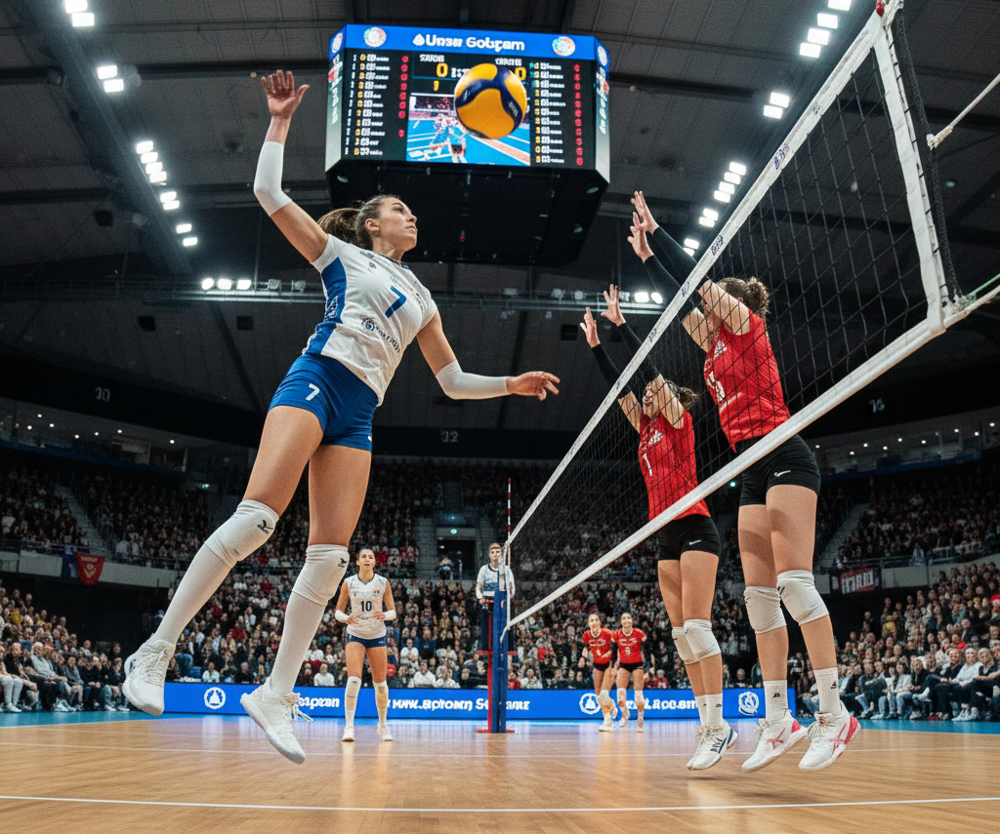

Manchetes e Bloqueios: O Vôlei
O vôlei é um esporte de equipe que exige grande entrosamento, técnica e potência. Jogado em quadras divididas por uma rede, o objetivo é passar a bola por cima dela e fazê-la tocar o chão da quadra adversária.
Fundamentos Principais
A técnica é crucial no vôlei. Os principais fundamentos incluem o saque (início do ponto), a manchete (recepção), o toque (levantamento para o ataque), o ataque (cortada) e o bloqueio (defesa na rede).
Grandes Competições
- Olimpíadas: O vôlei (de quadra e de praia) é um dos eventos mais assistidos dos Jogos Olímpicos.
- Superliga (Brasil): Uma das ligas nacionais mais fortes e equilibradas do mundo.
- VNL (Liga das Nações de Voleibol): Torneio anual que reúne as melhores seleções do planeta.